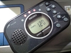

別に440Hzだけでもよかったんだけど、半音で１オクターブ出ちゃうのだ。
これで田んぼのど真ん中でもピッチを確認しながら絶叫できるぜ！
 Fonction Note de référence
Fonction Note de référence
- Appuyez sur l'interrupteur d'alimentation (1) pour mettre le métronome sous tension.
- Appuyez sur le commutateur de mode (8) pour passer au mode Note de référence.
- Appuyez sur les boutons de tempo/hauteur de son (9) pour régler selon vos besoins la hauteur du son, affichée sur l'écran. À chaque pression sur les boutons respectifs, les chiffres de la hauteur du son augmentent ou diminuent d'une unité comme illustré ci-aprés. Les chiffres avancent ou reculent rapidement si la pression est maintenue sur le bouton respectif.
- Appuyez sur les boutons de battement/note (11) pour régler la note de référence souhaitée. À chaque pression sur les boutons respectifs, la note de référence change dans l'ordre suivant. Elle change rapidement si la pression est maintenue sur le bouton respectif.
だそうです。 読んでもわからんけど使い方はわかるからそのうち読んでわかるようになるでしょう＾＾；